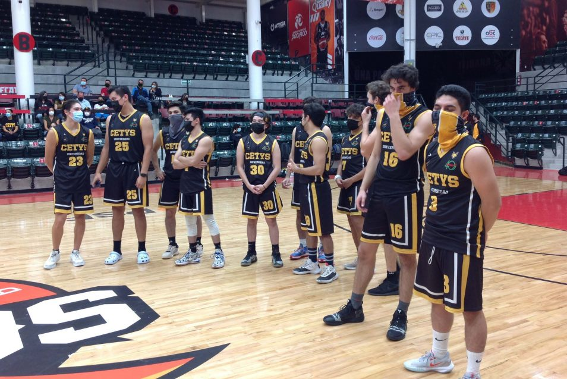

Deportes
Eventos Deportivos
Talleres Deportivos del ITSSNA
-Futbol
-Basquetbol
-Musica
-Voleibol
-Futbol Americano
-Danza
De origen decimonónico y exclusivamente europeo,
pero pulidos progresivamente y afinados todos
(a lo largo y ancho del mundo) en las últimas
cinco décadas del siglo XX, los grandes eventos deportivos
(por sus impactos y legados) son hoy uno de los
fenómenos festivo-comerciales más característicos del capitalismo
tardo-moderno y su hedonista sociedad
de híper-consumo. Por lo que no cabe
duda que para hacer un poco más inteligible el mundo social
contemporáneo, su abordaje y estudio es más necesario que nunca.

